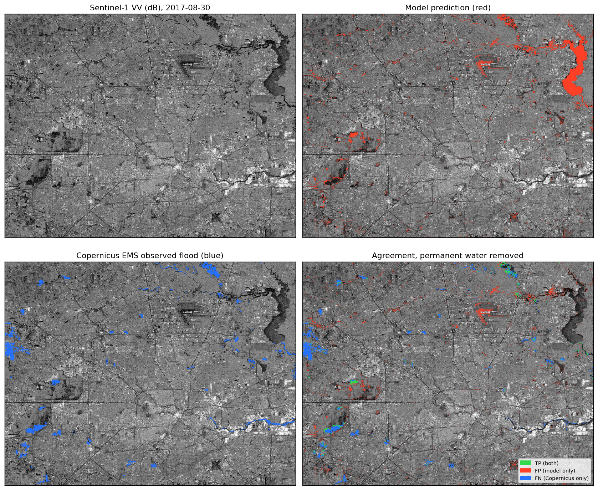

shipped · 2026Sentinel-1 SAR flood-extent pipeline.
A U-Net with a ResNet-34 encoder reads Sentinel-1 radar imagery and maps flood extent. Trained on the Sen1Floods11 benchmark, then validated on Hurricane Harvey over Houston, a real US disaster the model never saw. Radar sees through cloud and works at night, so it's the data source you can use while a storm is still overhead.